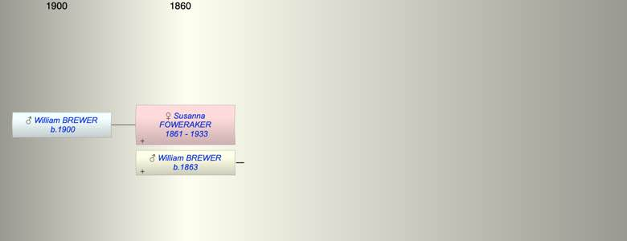

| [Index] |
| Susanna FOWERAKER (1861 - 1933) |
|  |
| b. 28 Jun 1861 at West Teignmouth |
| +. William George BREWER (1863 - ) |
| d. 30 Dec 1933 aged 72 |
| Near Relatives of Susanna FOWERAKER (1861 - 1933) | ||||||
| Relationship | Person | Born | Birth Place | Died | Death Place | Age |
| Father in Law | Samulel Watts BREWER | 29 Oct 1837 | Exminster | 1915 | 78 | |
| Mother in Law | Ann HOOPER | 1838 | 1905 | 67 | ||
| Self | Susanna FOWERAKER | 28 Jun 1861 | West Teignmouth | 30 Dec 1933 | 72 | |
| Spouse/Partner | William George BREWER | 1863 | ||||
| Son | William George BREWER | 1900 | West Teignmouth | |||
| Niece | Beatrice Hilda Louise BREWER | 1889 | Teignmouth | |||
| Brother in Law | Charles Hooper BREWER | 1862 | 1941 | 79 | ||
| Brother in Law | Frank Hooper BREWER | 1865 | ||||
| Brother in Law | Samuel W BREWER | 1868 | ||||
| Brother in Law | Living or Recently Deceased | |||||
| Sister in Law | Bessie Lilian ??? BREWER | 1877 | ||||
| Sister in Law | Lilian BREWER | 1878 | ||||
| Events in Susanna FOWERAKER (1861 - 1933)'s life | |||||
| Date | Age | Event | Place | Notes | Src |
| 28 Jun 1861 | Susanna FOWERAKER was born | West Teignmouth | |||
| 1900 | 39 | Birth of son William George BREWER | West Teignmouth | ||
| 30 Dec 1933 | 72 | Susanna FOWERAKER died | Note 1 | ||
| Note 1: Susannah Brewer 28 June 1861 - 30 Dec 1933> also William George Brewer died Feb 15 1942 aged 78 |
| Personal Notes: |
|
was she Susanna Florence Prowse married 1892
the son appears sto be Foweraker see probate of his father There was family Foweraker in Exeter about this time |
| Created on a Mac™ using iFamily for Mac™ on 15 Sep 2023 |